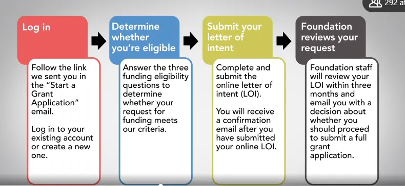

⌨️ TW - References and studies
Complete guide for Technical Writers
Bibliographic References
- Podmajersky, T. (2019). Strategic Writing for UX. São Paulo: Novatec.
- Bazerman, C. (2009). Genres, Typification and Interaction. São Paulo: Cortez.
- Cascaes, F. (2012). The Fantastic in Santa Catarina Island. Florianópolis: UFSC.
- Toffler, A. (1970). Future Shock. New York: Panbooks.
Blogs and Profiles


Communities and Resources

Videos
Marcia Riefer Johnston & Dave May - One AWS team's move to docs as code
Concepts and Definitions
Technical writing is about making people understand what a program does, what a system does, and enabling people to use it, whether or not they are programmers (HCI → Human computer interaction).
Work Areas
- Explain the areas of work
- Explain how to apply knowledge
- Have an elaborate portfolio and resume
- Be aware of areas without knowledge/with difficulty
Interaction Designer
An interaction designer is focused largely on how best to create efficient and effective interactions between users and interface. These interactions could happen within screens, between screens, or even beyond the screen. You may sketch out screen-based interactions or interactions beyond the screen with a pencil or on a whiteboard. You may create interactive wire frames or clickable prototypes that let stakeholders or clients click through and experience a basic level of interactivity.
Information Architecture
As you review information architecture jobs, you'll find that most are focused on the creation of web and perhaps mobile resources, often websites specifically. You would attempt to learn through research how users naturally group terms or topics together. The usability test would involve having users do actual tasks on the website, where they're asked to get from point A to point B.
Technical Writer
The technical writer is charged with the task of making sure that important technical information is understood by the intended audience groups. Someone who can understand enough from developers or engineers about the technical ins and outs of the website, application or product, and then translate that understanding into user-friendly explanations. The technical information may come in the form of screen-based help, or it could be hard copy or electronic documentation that is used to help consumers understand more about software or physical products.
Quick Start Guides
A quick start guide briefly describes what tasks users can complete in each section. They don't have to complete the tasks to use the portal, but they might want to use those functions eventually. The guide provides information on how to do it but it doesn't compel the user to complete that task. You may be wondering whether it's okay to blend procedural information (steps that must be followed in a sequence) with conceptual information (descriptions of tasks or features). The answer is yes but you have to do it carefully.
It's better to be useful than pretty is a great saying when you're incorporating visuals into your quick start guide. Sure, you want the guide to be attractive, but any visual you add, whether it's a drawing, flow chart, or screenshot, must be useful to your user. A well written quick start guide combines written explanations and useful visuals to help people understand how to get started with your product, process, or tool.
Flowchart Example

Writing Tips
- Use a verb
- Start with a question
- Use plain language as much as possible
- Move complementary information to where it belongs (at another level)
Consistency in Documentation
Be consistent. Use the same markup each time you want the user to see a similar thing. For example, if you're using a red arrow on the first screenshot to point to the item the user should click to complete the step, don't switch to a red circle on the second screenshot. That would just be confusing.
Use numbers to indicate a series of steps on one screenshot or a series of options. No need to go screenshot crazy. Sometimes one screenshot will serve to illustrate several steps. If this is the case, just number the items in the screenshot you want the user to notice. If your screenshot has a lot of information and text in it already, you may want to pull the annotations off of it and put them to the top, side or bottom.
Referring to Users
Here are two reliable ways to refer to your users in your guide:
- Use second person pronouns: you, your or yours. For example, instead of writing "The user should click Protected Account to view all the status information on each registrant," write "You should click Protected Account to view all the status information on each registrant."
- Use the imperative mood: which is a command form of the verb. When you use the imperative mood, you imply but don't write the word you. Here's the same instruction written in the imperative: "Click Protected Account to view all the status information on each registrant."
Review Checklists
Ask a subject matter expert to review your quickstart guide with these in mind:
- Accuracy
- Functionality
- Consistency
- Appropriateness
Ask users to review your quickstart guide with these in mind:
- Nice to know questions
- Can they use the guide?
- Need to be actual/real users:
- Prospect customers
- Social media
- Online user community
Writing Best Practices
It's always better to start a quick start guide (or a guide) with a verb for the action that'll be performed.
The present tense is always preferable for the start of actions/instructions. This makes the text clearer and the steps more precise for the reader. Important information should always start the sentence, so it draws more attention from the reader than the end.
Always place common terms near technical terms; this facilitates reading. Always indicate that this is an explanation of the technical term used in the document. It's also good to create a concise glossary.
Extra Material
Discussions